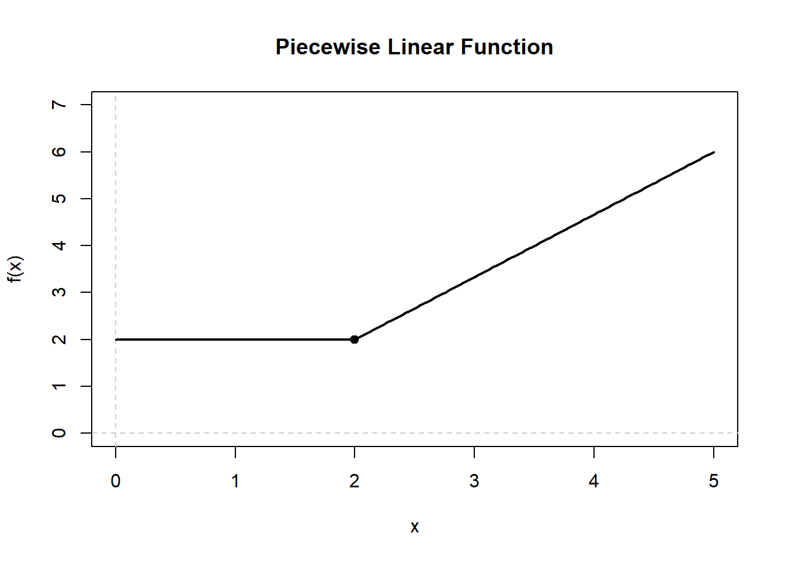
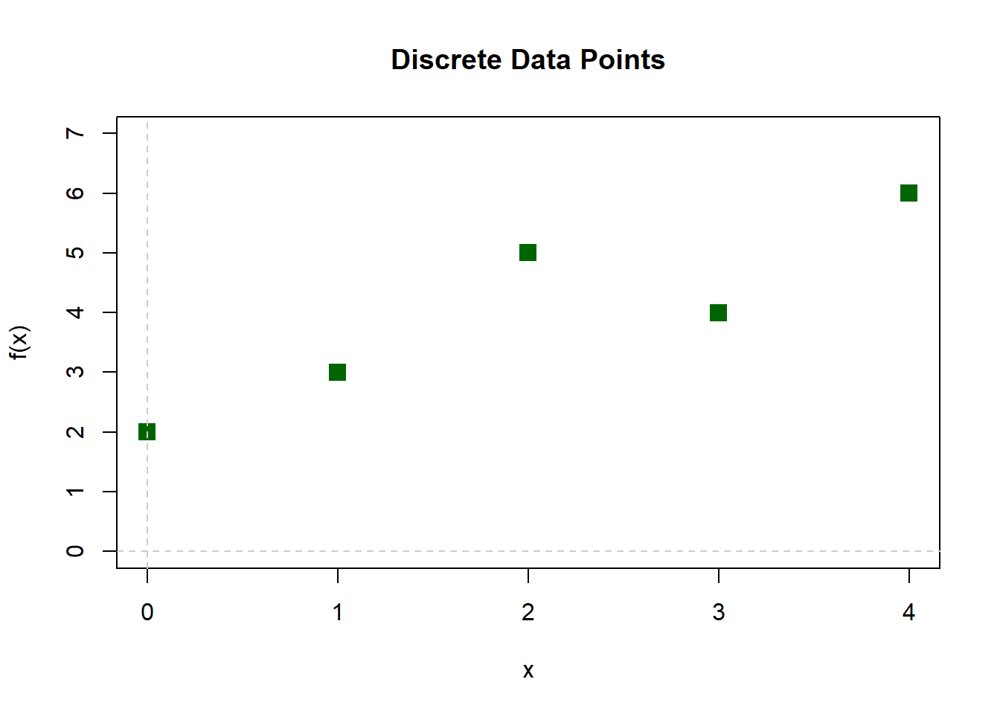
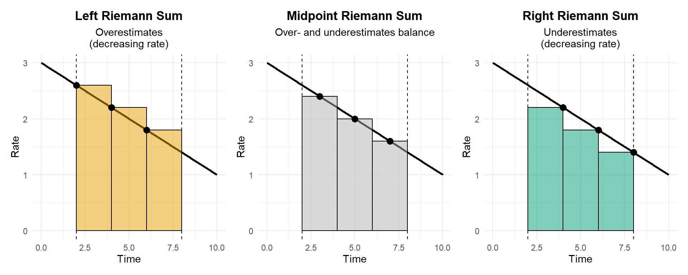
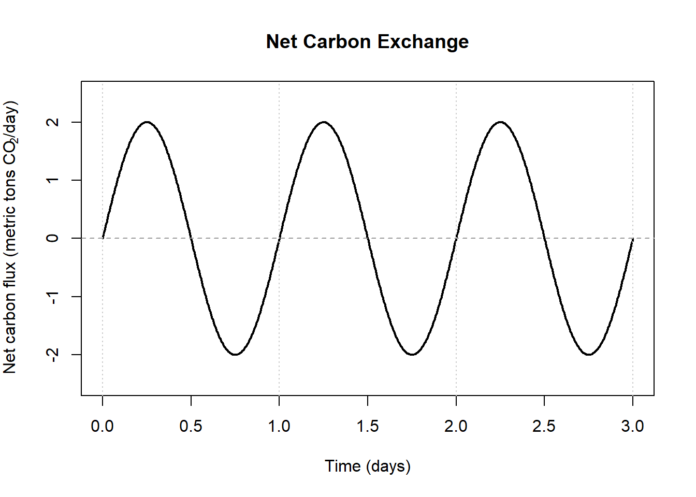
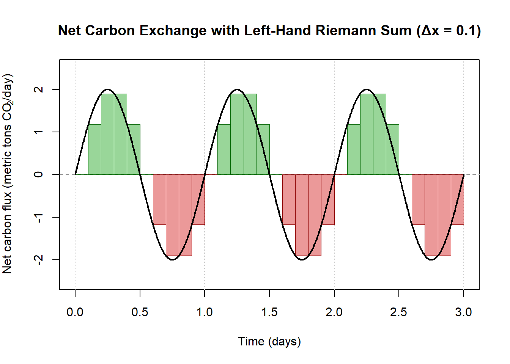
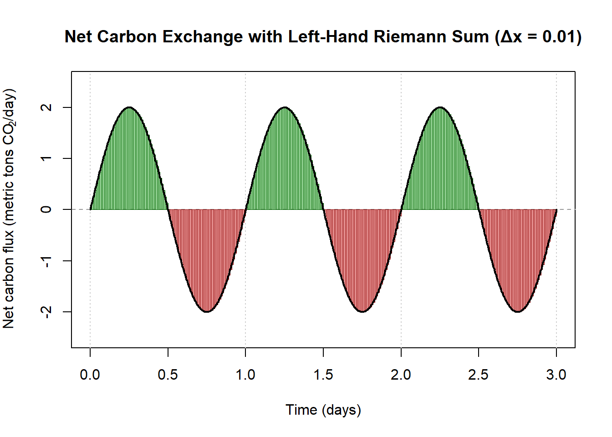

Chapter 7 Workbook: Approximating an Integral: Understanding Area, Accumulation, and Riemann Sums
Activity 1 — What Does “Area Under a Curve” Mean?
Activity 1A: Area Under a Constant Function
Consider the function
\[
f(x) = 3 \quad \text{on } [0,5].
\]
Prompt (Think–Pair–Share):
- What does the graph of this function look like?
- How would you describe the “area under the curve” in plain language?
- Can you calculate the area?
What if f represented the velocity and x represented time
- What would the area under the curve represent?
\[ v(t) = 3 \quad \text{on } [0,5]. \]
Key takeaway:
Summary:
Activity 1B: Area Under a Piecewise Linear Function
Consider the following piecewise description (a graph should be provided):
- From \(x = 0\) to \(x = 2\): \(f(x) = 2\)
- From \(x = 2\) to \(x = 5\): a straight line from \(f(2) = 2\) to \(f(5) = 6\)

Guiding Questions:
- What is the accumulation of this function between [0 5]?
Key takeaway:
Summary:
Activity 1C (Student Extrapolation): Area from Discrete Data
You are given the following table of values:
| \(x\) | 0 | 1 | 2 | 3 | 4 |
|---|---|---|---|---|---|
| \(f(x)\) | 2 | 3 | 5 | 4 | 6 |
Prompt:
- In this case no function is given to us. Just the data points.
- Estimate the area from \(x = 0\) to \(x = 4\)?

Reflection:
- What assumptions are you making?
- How might different assumptions change your estimate?
Activity 2 — The Big Picture: Riemann Sums
Reading the Math
Prompt
- Can you decipher what this is telling us to do?
\[ \sum_{i=1}^{n} f(x_i)\,\Delta x \]
Activity 2A: Left-Hand Riemann Sum
We return to the function
\[
f(x) = x^2 \quad \text{on } [0,2].
\]
Now lets pull together the variables we need
\(\Delta x\)
\(f(x_i)\)
\(\sum_{i=1}^{n} f(x_i)\,\Delta x\)
Activity 2B: Right-Hand and Midpoint Sums
Prompt:
- If the left-hand sum samples the left endpoint of each subinterval:
- Where would the right-hand sum sample?
- Where would the midpoint sum sample?
Student Tasks: Calculate the right-hand and midpoint Riemann sums for \[ f(x) = x^2 \quad \text{on } [0,2]. \] [Hint: Create a process, build a table of data points, their function values, then calculate the sum]
Activity 3 — Choosing a Method: Conservative vs Optimistic Estimates
Discussion Activity
Assume the function is increasing on the interval.

Small-Group Discussion Prompts:
- Which method gives a conservative estimate?
- Which method gives an optimistic estimate?
- When might overestimating be safer?
- When might underestimating be risky?
Assume the function is decreasing

Prompt
- What about now?
Activity 4 — Increasing the Number of Intervals
Activity 4A (Discussion): Accuracy vs Cost
Prompts: - What happens to the the Riemann summ as \(n\) increases?
Activity 4B Big-Picture Bridge to Integrals
Reflective Prompt: > In Calculus I, Newton moved from average rates of change to instantaneous rates by letting \(\Delta x \to 0\).
- What do you think happens if we let the number of rectangles grow without bound?

- How might this lead us from Riemann sums to exact area?
\[ \sum_{i=1}^{n} f(x_i)\,\Delta x \rightarrow \int_{a}^{b} f(x)\,dx \]
Activity 5 — Signed Area: When the Function Goes Negative
In this final activity, we use a realistic environmental signal to build intuition for signed area. Many environmental fluxes naturally oscillate between positive and negative values over time.
Activity 5A (Worked Together): Carbon Flux as a Sinusoidal Process
Consider a short-term model of net carbon exchange between a forest and the atmosphere over three days.
- Positive values of \(f(t)\): net carbon sequestration (uptake)
- Negative values of \(f(t)\): net carbon release
Suppose the net carbon flux (in metric tons of CO\(_2\) per day) is modeled by: \[ f(t) = 2\sin\!\left(2\pi t\right) \quad \text{on } [0,3], \] where \(t\) is time in days.

Interpretation prompts (class discussion):
Why might carbon flux vary smoothly rather than remain constant?
At what times is the forest acting as a carbon sink?
At what times is it acting as a carbon source?
What do the zeros of the function represent physically?
Lets do a unit check, what are the units of the area under the curve?
How much net carbon has accumulated over the full three days.
How would you approximate this with a Riemann Sum?

- Now with a much smaller delta x

Key Idea
Environmental processes often involve competing fluxes: - Uptake vs release - Storage vs loss
A definite integral does not measure “area” alone—it measures net accumulation.
Signed area is the mathematical tool that allows calculus to track both magnitude and direction in real environmental systems.